Storybooks by Cirque du Soleil
Storybooks is an interactive, digital storybook application that extends the Cirque du Soleil experience beyond the show, providing Cirque du Soleil an opportunity to further connect audiences with their brand values.
This project is based on Cirque du Soleil's 2017 touring show, Kurious: Cabinet of Curiosities. The plot of the show was adapted into a narrative where the reader opens and explores the "cabinet of curiosities".
ROLES
Video Editing, Interaction Design, Research, Visual Design
TOOLS
Illustrator, Photoshop, Premiere Pro, After Effects, Audition, Keynote
01 / 04
Research
Business Problem
Cirque du Soleil has been the leading innovator of live performance art as a nouveau circus for over 30 years, reinventing the circus with its modern blend of acrobatics, music, and performance art. However, with so many people having seen at least one show, Cirque has had difficulty driving repeat attendance, dropping 36.6% in tour revenue, leading us to believe they may have peaked in their current market.
"The market for Cirque is maturing. An estimated 180 million people have seen a performance. How do you leave them wanting more?" — James Quigley, CEO Emeritus, Deloitte
"Cirque du Soleil, the operator of avant-garde circus events, has reported that revenues of its European tours fell by 36.6%... It's single biggest source of revenue was ticket sales which fell by 39%." — Christian Sylt, The Telegraph
Challenge
But the challenge is that digital platforms cannot compete with the spectacle of a live show. In fact, our research showed that an intervention during the show could prove distracting, even taking away from the experience.
Cirque du Soleil had previously brought on a design firm to create an experience that would allow viewers to be a part of the TORUK show. Though the overall rating of the app being below average was due in part to it "not working", our main takeaway was in how having to navigate the app during the show would take away from giving one's full attention to the stage and its performers.
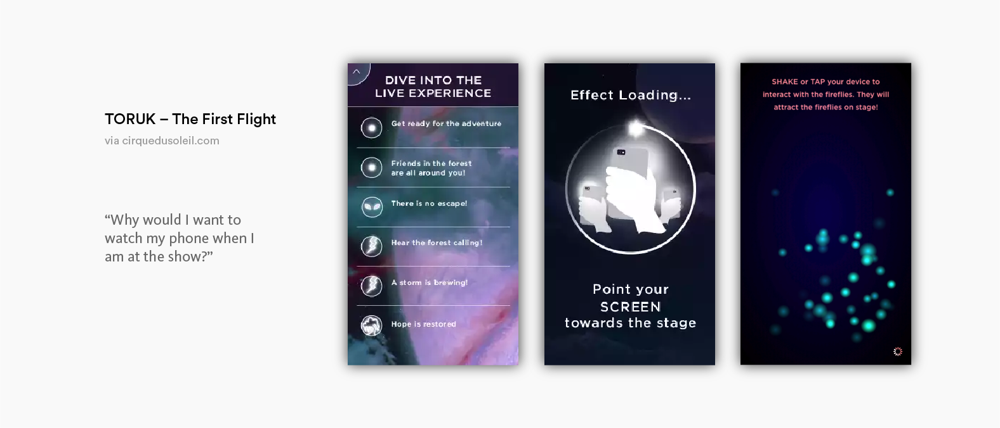The Brand
Cirque's mission is "to invoke the imagination, provoke the senses, and evoke the emotions" of their audiences. After comprehensive research of their values, we came across their recruitment process and learned that Cirque encourages their performers to live out their dreams on stage. From this, we abstracted a value of "creating dreams", in which our concept and product were focused on.
For Cirque and its performers, their dreams are brought to life as what we see on stage. We see the value of creating dreams as the driving force for the development and production of their shows. And we see this going hand-in-hand with extending the Cirque experience to strengthen their relationships with consumers.
Current Experience
Speaking to people who had been to Cirque shows, and ones who had not, gave us insight into their views on the brand and the experience as a whole. People who had seen at least one show said the event was made into an occasion, and they would only go to a show once every few years because of the ticket prices. Some enjoyed the acrobatics and performances as a spectacle, while others who were more invested in the story aspect found the show much more emotional. However, the story of each Cirque show is not formally revealed, so it is up to the individual themselves to interpret. We found this was a pain for several viewers, who could not comprehend the show's storyline, as indicated by our research through online reviews. But one common theme throughout the interviews was the degree of respect people have for the company. How can we leverage that into something that would drive higher return rates?
02 / 04
Process
Storytelling Opportunity
There is an opportunity to dive deeper into the stories behind Cirque's shows that could move their existing products for adults, into a newer market for young children. Unlike older generations who have a pre-existing connection to shows like Michael Jackson ONE and The Beatles LOVE because of their iconic figures—which in fact are some of their highest grossing shows—Cirque du Soleil can connect to a younger generation, fostering a love for the brand, rather than for shows and icons.
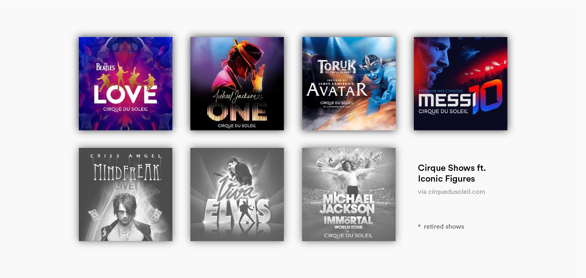Concept
Through our Sprint process, we took three strands of insights and developed them into our overarching concept. These ideas stayed true to the values of Cirque, while allowing us to pursue new avenues in digital offerings. This led us to ask: How can we take Cirque du Soleil's value of creating dreams beyond the live show? How can we create a digital intervention that adds value for Cirque du Soleil’s consumers?
And we reframed our earlier assumptions into: Does the experience that we’re providing have to be in show? Does it even have to be in the venue?
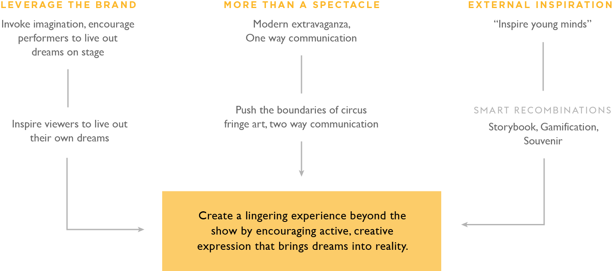Brand Loyalty & Area of Intervention
Recognizing that the most fascinating part about the Cirque experience is the wonder of the performance, we moved away from an in show intervention, allowing the show alone to take the spotlight. Instead, we developed a brand loyalty map, in which we highlighted a potential gap where consumers may leave the brand and prevent them from repurchasing. To close this gap, our intervention would need to add value to the existing product and engage consumers in a way that would put the brand at the forefront of their minds.
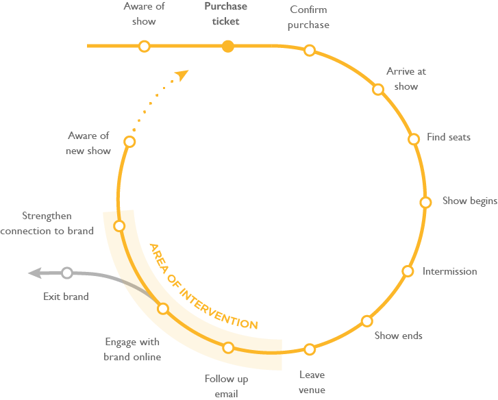Journey Framework
We placed our digital intervention after the show, in an effort to help consumers relive their experiences from the magical show. Storybooks aims to resurface the reader's Cirque experience days, weeks, and maybe even years after the show. This iteration of our journey framework highlighted key touchpoints for the show experience that helped us narrow down when our audience would likely first encounter our product, as well as addressing: How much of an impact can a separate digital product have on the actual ticket purchasing decision? Would anyone even want to spend the time and effort to engage with Cirque after the show?
The lows of the post-show brought about the idea of when and where our experience could thrive. We capitalized on the happiness that remains after a show and in the early morning after, while memories of the show are still fresh, choosing this timeframe as our target moment to introduce Storybooks to consumers.
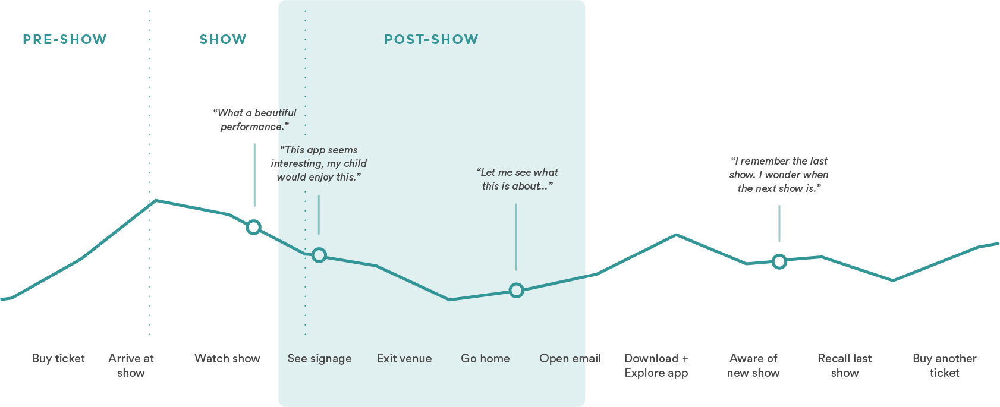Soft Introduction
Taking into consideration the likelihood that consumers will be tired after a long show, we are reducing the cognitive overhead of promoting Storybooks by utilizing bold, concise signage as a soft marketing approach. With signage inside the venue, we aim to produce effects similar to that of movie cardboard displays in exciting moviegoers for upcoming releases. This information is then reinforced later on through a link in an email that redirects to the app store, reducing the friction of searching for the app. Since Cirque already sends out follow-up emails to promote their social media and to collect feedback, we chose this established method to provide consumers direct access to Storybooks.
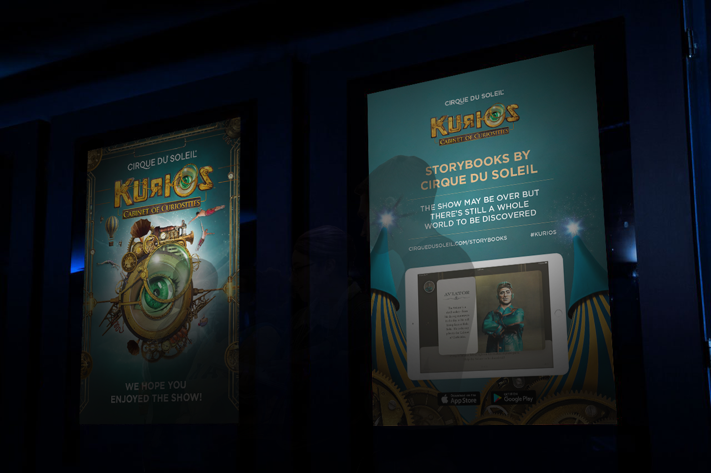
Audience & Persona
Cirque's audience is mostly comprised of adults and families, but we chose to design for families to entice the younger demographic. We believe the show's story is such an important aspect, with the ability to add a considerable amount of depth to a wondrous experience, that it could foster a connection with the brand that carries into adulthood, cultivating the new generation of Cirque fans.
Our target persona, whom we call "believers", are parents with young children who are looking for memorable experiences to enjoy together. On special occasions, they are willing to spend a little more, but they want to make sure the whole family finds the experience worthwhile. They want to introduce their children to music and culture, but feel confident in the purchases they make. Pain points for them are when their children don't remember or enjoy the events that were planned.
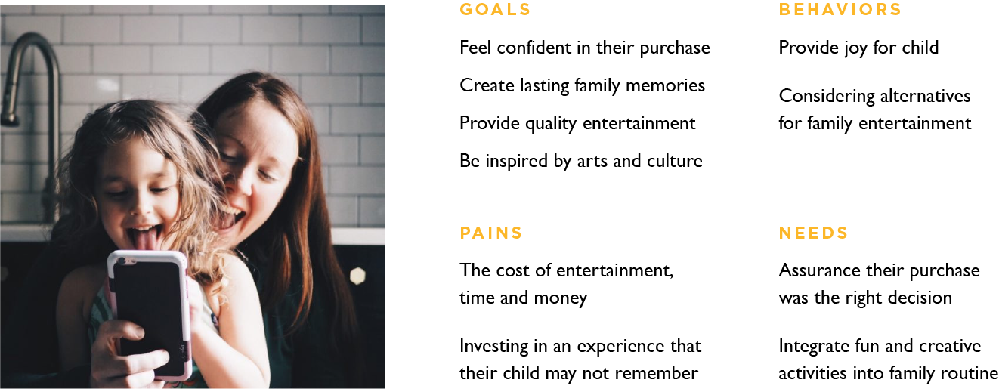Value
The development of a storytelling app allows for an on-going use, versus a live show that only offers a one-time experience. This perception could give new meaning and value to the brand. For Cirque, this means creating a closer connection to their audiences and strengthening their offerings to a younger demographic. And for consumers, this brings about more quality time between parent and child, as well as a means for parents to support a love of learning and reading for their children.
03 / 04
Design
My Storybook
INSCRIPTION
Adapted from physical storybooks, the incorporation of an inscription turns the app into personal keepsake for children, which we reframed from the idea of getting a souvenir from the show. This also affords for a more engaging experience by integrating their name into the book. Storybooks follows a linear narrative, but a table of contents system allows readers to jump back to their favourite moments at any time, as new content is unlocked as the story progresses.
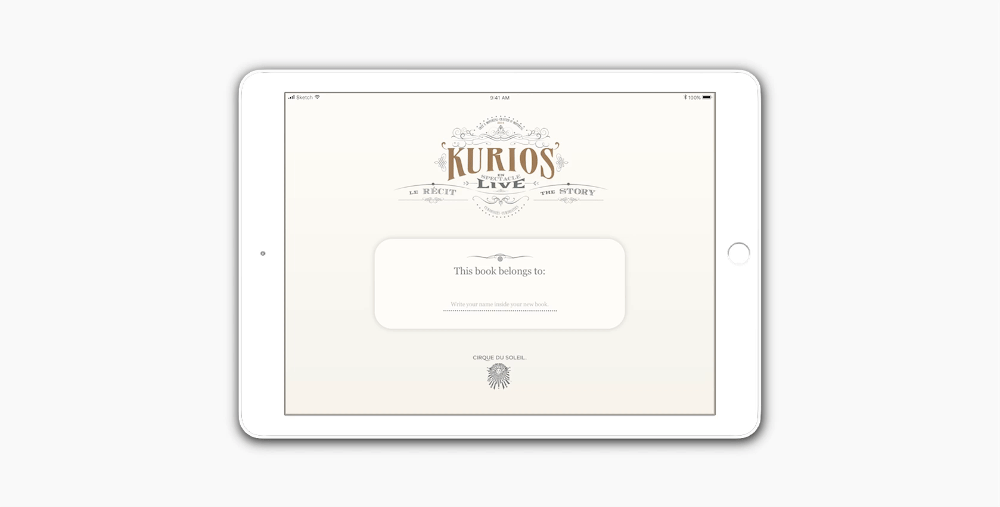 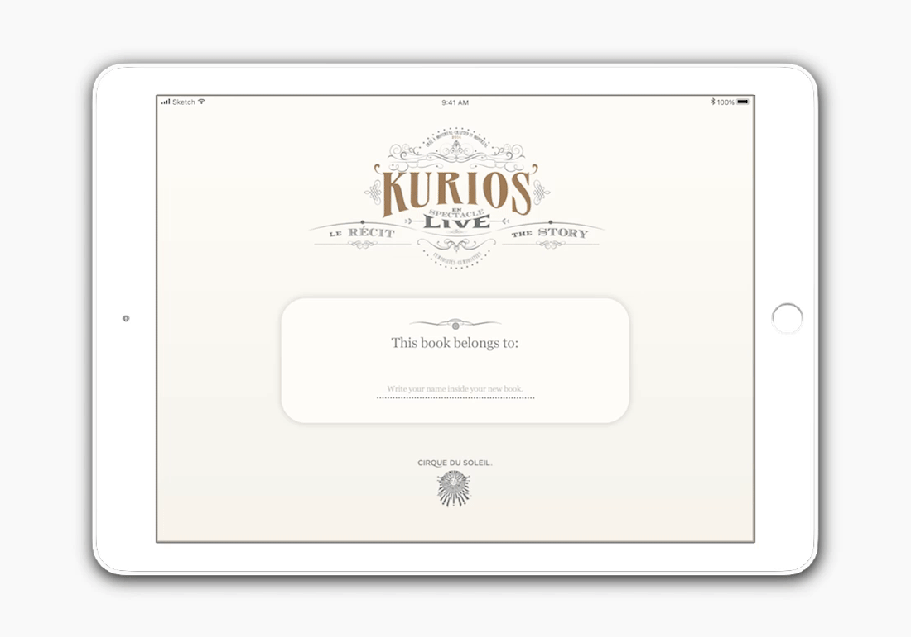Relive The Magic
360° VIDEO
An immersive experience does what photos cannot. Not only will readers be able to get up close with their favourite characters, being put in the centre of the sounds and surroundings can bring about an entirely new perspective of the show.


CHARACTERS
Initially, we had character introductions preceding a chapter/page, but instead adopted a more natural way of discovery as they move through the story, to help readers create a deeper connection with the characters. Integrating character information into the storybook can allow readers to learn more about performers they've seen during the show, or can give context for people who are reading the book before going to a show.


Gamification
MICROPHONE
Storybooks is more than simply video and text. By going deeper into the story and adapting the most climactic moments of the show, we are taking the magic and wonder that Cirque provides, and translating that into interactions activities.


GYROSCOPE
By utilizing the mechanical features available, we are able to fully encompass the personalization and educational benefits of a traditional storybook while combining that with the gamification aspects from situating the product on a digital medium.


Support Learning
READ ALONG
It was important for us that we included learning aspects into Storybooks to support growing reading skills, as we saw the value in this was as important as being able to extend the show experience, particularly for our target audience. This is exhibited through adaptations of the read-aloud feature from LeapFrog and a dictionary look-up feature to help with new vocabulary. This provides value for children, which in turn, enforces the value to parents.


Immersive Experience
Designing for a tablet was a move for accessibility, with most kids likely not having access to their own phones. It also reinforces the idea of a keepsake, with the app and data being saved locally, rather than situating it on a web browser, which would lead to additional cognitive overhead in accessing it. A tablet lends itself well as a sharable consumption device between a parent and a child, or between two children. And the integration of the mechanical features came almost instinctively, emulating the immersive experience from the show, and as a more natural way of engaging with the content on screen. For instance, the balancing interaction, which moved quickly off of a slider bar, to utilizing gyroscrope technology.
UI Decisions
Following a session of feedback, we came to realize we were, in some ways, losing the visual metaphor of a storybook. In our revisions, we made sure to reincorporate that, which in fact offered a better way to highlight visual content and improve the readibility experience with longer line lengths. The vertical layout was then later reworked into our design for the character profiles, indicating a clear difference between the story and character content.
 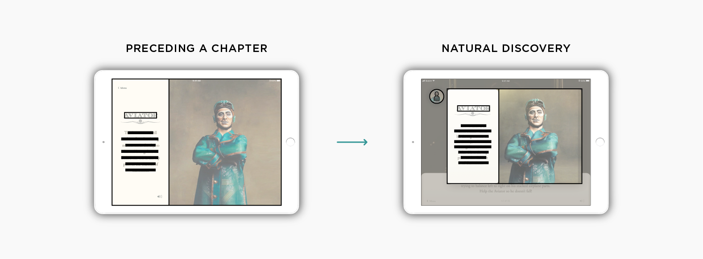Learning Aspects Consideration
Our initial research saw how parents will often resurface ideas of a book, in an effort to ingrain the teachings into their child's memory, as we observed in parent-to-child reading behaviours. After speaking to a publisher and conducting interviews with parents, we were able to form an insight on how we could support growing reading skills through Storybooks. This was a major move for us because the value of this provided an incentive for parents to take interest in getting the product for their children. And while the written content is at a 6 to 8-year-old reading level—allowing children at that age to read on their own—it still leaves rooms for parents to read to children younger than that, while the child interacts with the media content, encouraging quality bonding time between parents and children.
04 / 04
Conclusion
Longevity
We believe this could be an interesting, small bet for Cirque du Soleil to try out with a single show. But we have no doubt that Storybooks could be expanded to include all 22 of their current and upcoming shows. With the magnificent range of shows developed by Cirque du Soleil, Storybooks could allow anyone, parents or child, to relive their experience and encourage them to create their own dreams.
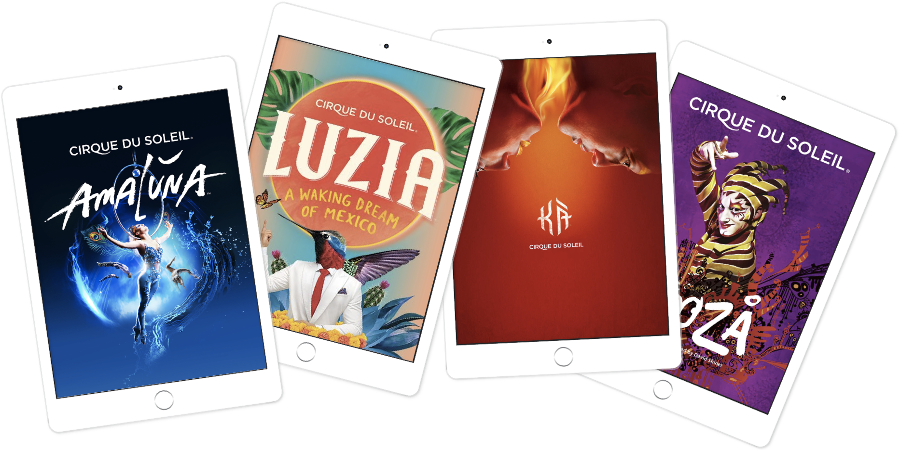